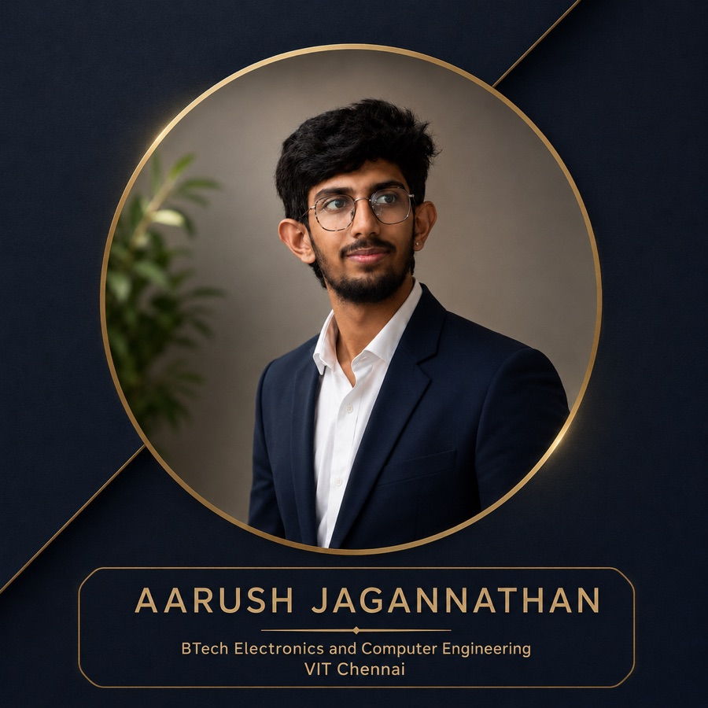
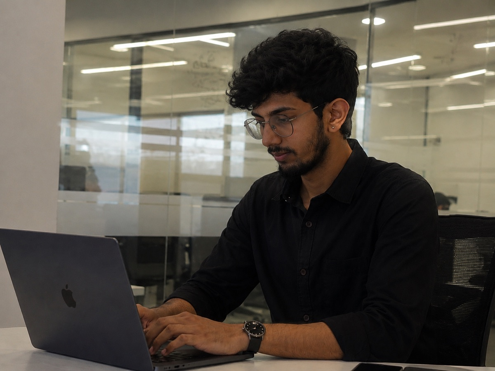

Hello, I'm
Aarush Jagannathan
Embedded IoT · Industrial Digitalisation · Backend Systems
Final-year Electronics and Computer Engineering student at VIT Chennai. I've decoded a Modbus register map on real industrial hardware at Zoho, tracked a 107-supplier digitalisation rollout at Daimler Truck, and shipped a multi-channel support platform that's live in production.
- Daimler Truck 107-supplier rollout, Power BI
- Zoho Corporation ESP32 ↔ Modbus RTU gateway
- ServiceDesk AI Deployed and running live


Get to know me
Who am I?
I'm a final-year Electronics and Computer Engineering student at VIT Chennai, graduating in 2027. My work sits across three areas that keep turning out to be the same problem: getting reliable data out of something, and making it useful to the people who have to act on it.
At Zoho that meant firmware. I built an ESP32 gateway that talks to a Schneider EM6400NG three-phase energy meter over Modbus RTU on RS485 — decoding the holding-register map by hand to pull voltage, current, power, power factor and frequency, then publishing to Zoho IoT Cloud over MQTT with TLS.
At Daimler Truck it meant the plant floor and the spreadsheet. I tracked a 10-stage data-implementation rollout across 107 suppliers, built the Power BI dashboard the Supplier Quality Development team ran it from, and wrote the Supplier Digitalisation Handbook I later presented at the Qprime supplier conclave.
And in ServiceDesk AI it meant the backend — REST APIs, JWT auth, PostgreSQL, a WhatsApp intake channel and an AI layer built to degrade gracefully when the model API isn't there. Currently deepening my Python and DSA fundamentals alongside all of it.
My journey
Experience
Digitalisation Intern — Supplier Quality Development
Jun – Jul 2026Daimler India Commercial Vehicles (Daimler Truck AG)
Oragadam Plant, Chennai
- Tracked a 10-stage real-time data implementation rollout across 107 suppliers, and built the Power BI dashboard the Supplier Quality Development team used to run and report it
- Designed a Digital Transformation Priority Checklist scoring suppliers on 5 criteria mapped to 6 priority tiers, weighting cost and ROI highest based on research into Indian MSME capital constraints
- Authored a Supplier Digitalisation Handbook and presented it at the Qprime supplier development conclave to an external supplier audience
- Converted handwritten supplier submissions into structured datasets; delivered a 5-tab Excel priority-matrix workbook and a supplier-facing HTML scoring tool
IoT Engineering Intern
May – Jun 2025Zoho Corporation
Chennai, Tamil Nadu
- Built an ESP32-based industrial IoT gateway reading a Schneider EM6400NG three-phase energy meter over Modbus RTU on RS485 (9600 baud, 8N1), publishing 9 electrical parameters every 5 seconds to Zoho IoT Cloud over MQTT with TLS
- Decoded the meter's Modbus holding-register map to extract voltage, current, active/reactive/apparent power, power factor and frequency; configured 32 device datapoints cloud-side
- Implemented Wi-Fi provisioning via a captive-portal access point so a field installer can commission the device from a phone with no laptop and no reflash; credentials persist in ESP32 NVS
- Secured the cloud connection with an embedded root CA certificate
My work
Featured Projects
Three systems, three layers — a deployed cloud platform, industrial firmware on real metering hardware, and silicon-level design.
ServiceDesk AI
Multi-Channel Customer Support Platform
A cloud-native support platform for small businesses: every complaint — web or WhatsApp — becomes a tracked ticket with an owner, a priority and a status, with an AI layer that assists the agent rather than deciding for them.
- Backend exposing ~45 REST endpoints with JWT authentication (bcrypt, httpOnly refresh-token cookies), role-based plus record-ownership authorisation, and schema-level request validation
- PostgreSQL 16 data model with referential constraints, indexes and GIN full-text search; 161 automated tests run against a real PostgreSQL instance using production migrations
- Two-way WhatsApp intake through Meta's WhatsApp Cloud API, with HMAC signature verification and database-level webhook idempotency so provider retries cannot duplicate tickets
- AI classification, summaries and draft replies sit behind a provider abstraction with a deterministic rule-based fallback — if the model API is down, every core workflow still works
- Knowledge-base RAG: articles chunked, embedded and retrieved by cosine similarity over an HNSW index, answered with citations
BCSE408L Cloud Computing, VIT Chennai · two-person team · deployed on Vercel and Render
Industrial IoT Energy Monitoring Gateway
Zoho Corporation — IoT Engineering Internship
An ESP32 gateway that reads a Schneider EM6400NG three-phase energy meter over Modbus RTU on RS485 (9600 baud, 8N1) and publishes 9 electrical parameters every 5 seconds to Zoho IoT Cloud over MQTT with TLS.
- Decoded the meter's Modbus holding-register map to extract voltage, current, active/reactive/apparent power, power factor and frequency; configured 32 device datapoints cloud-side
- Wi-Fi provisioning through a captive-portal access point, so a field installer can commission the device from a phone with no laptop and no reflash; credentials persist in ESP32 NVS
- Secured the cloud connection with an embedded root CA certificate
- Stack: C / C++ (Arduino IDE), ModbusMaster, WiFiManager, Zoho IoT SDK, Preferences / NVS
Ultra-Low-Power 10-bit SAR ADC
VLSI Project-I · 180 nm CMOS
A comparative study of capacitive-DAC switching schemes for a successive-approximation ADC — the acquisition stage every low-power sensing system depends on, and the one that usually decides its energy budget.
- Switching-energy comparison of four capacitive-DAC schemes — conventional, monotonic, Vcm-based and merge-and-split — on a single testbench, benchmarked in normalised CV²ref
- Literature survey across 20+ IEEE / JSSC papers to select a fabricated 7.6 nW, 1 kS/s reference design as the comparison baseline
- Evaluating against INL/DNL, ENOB and the Walden Figure of Merit
Review-I cleared September 2026 · ongoing through Project-II
Expertise
Technical Skills
What I've actually built with, across firmware, data and the backend.
Languages
Python, C, C++, SQL, TypeScript
Data & Analytics
Power BI, Advanced Excel (pivot models, weighted scoring matrices), data cleaning and structuring, dashboard design, KPI tracking
Backend & Databases
REST API design, Node.js / Express, PostgreSQL, JWT authentication, role-based access control, schema design, indexing, integration testing
Embedded & IoT
ESP32 / ESP32-S3, Modbus RTU over RS485, MQTT over TLS, UART / Serial, sensor integration, industrial energy metering, Arduino IDE
Tools & Methods
Git & GitHub, Linux, Postman, Cadence Virtuoso / Spectre, process mapping, requirement gathering, technical documentation
Coursework
Data Structures & Algorithms, DBMS, Operating Systems, Computer Networks, Object-Oriented Programming, Microcontrollers (8051), VLSI Design, Internet of Things
Academic background
Education
B.Tech, Electronics & Computer Engineering
Vellore Institute of Technology, Chennai
2023 – 2027
7.91 CGPA
Click to see achievementsHighlights
- Authored and presented the Supplier Digitalisation Handbook at Daimler Truck's Qprime supplier conclave, 2026
- Two industry internships completed alongside the degree — Daimler Truck and Zoho Corporation
- No standing arrears
Class XII (Senior Secondary)
Sri Chaitanya Techno School, Perumbakkam
2023
89%
Click to see achievementsHighlights
- Physics, Chemistry, Mathematics stream
- Strong foundation in mathematics and applied physics
Class X (Secondary)
Sri Chaitanya Techno School, Perumbakkam
2021
90%
Click to see achievementsHighlights
- Consistently high academic performance
- Developed strong analytical foundations